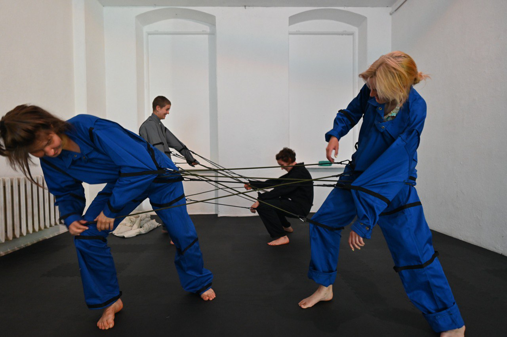
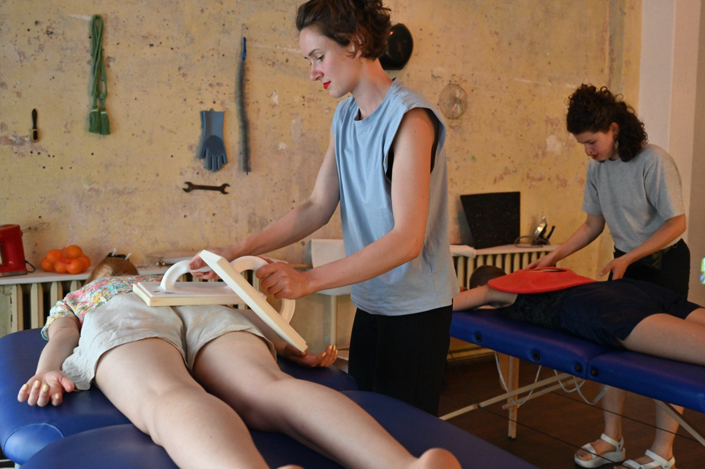

Hautsam
Hole of Fame, Dresden 2022
Welches Potential steckt in sinnlichen Erfahrungen und wie besinnt sich Mensch auf seine Sinne? Hautsam ist ein kollektives Selbstexperiment, in dem wir alltägliche Gegenstände nach allen Enden wenden, hinhören oder -riechen und dabei unbekümmert unbeholfen sind, um unser sinnliches Bewusstsein zu schärfen. In vorhergehenden Selbstversuchen haben wir das Besinnen auf unsere Sinne in einer spielerischen Auseinandersetzung mit unserem Körper an Alltagsgegenständen erprobt. Dabei ist ein Versuchslabor entstanden, das dazu einlädt die Werkzeuge des eigenen Körpers auf spielerische Art und Weise zu (re)aktivieren. Die Selbsterfahrung an den von uns entwickelten Stationen soll an die Ressource Körper und das darin liegende Potenzial der sinnlichen Erfahrung erinnern. Spiel mit. Nur zu.
- 
- 